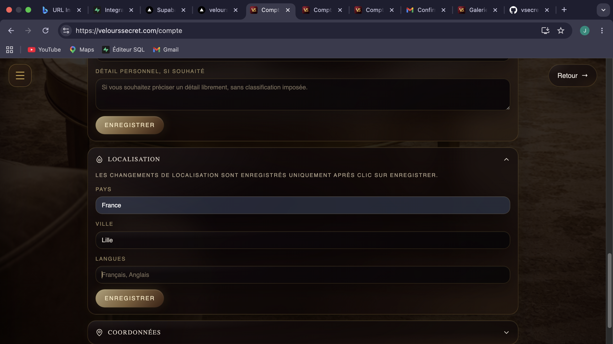
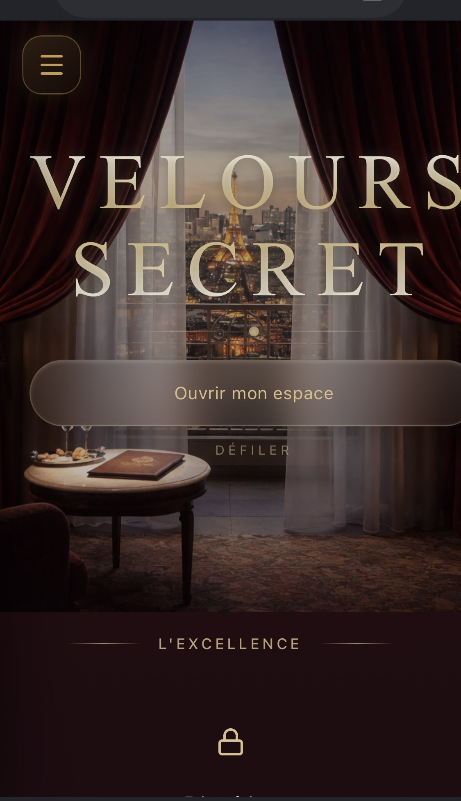
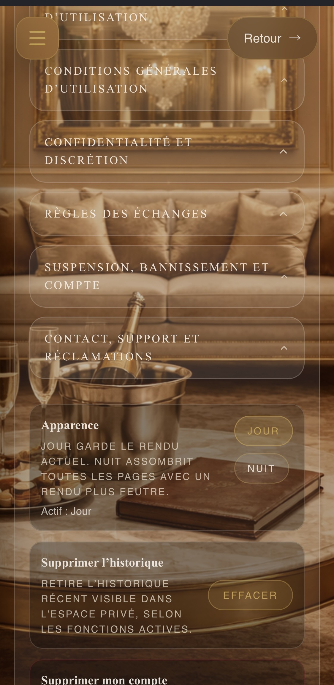

Demonstrateur
Generateur CV intelligent
Import, edition, apercu, lettre de motivation, export PDF/Word et version web. C'est le projet outil a stabiliser et valoriser ensuite.
Ouvrir le projet CVRealisations
Cette page garde la trace de ce qui existe, ce qui peut attirer des clients, et ce qui reste a finir sans melanger vitrine, paiement et outils.
Demonstrateur
Import, edition, apercu, lettre de motivation, export PDF/Word et version web. C'est le projet outil a stabiliser et valoriser ensuite.
Ouvrir le projet CVA vendre
Vitrine principale pour presenter les packs, rassurer, ouvrir le contact et envoyer vers les paiements Stripe.
Voir les offresPreuve technique
Univers digital soigne, direction de marque, transparence, parcours sensible et base IA pensee pour une experience plus intime.
Preuves
Espace prevu pour afficher les futurs sites vitrines, avant/apres, temoignages et cas d'usage pour attirer plus facilement.
Proposer un projetPreuve d'univers
Ces exemples valorisent le rendu : ambiance feutree, glassmorphism, dorure, parcours prive, interaction audio, profil, agenda et conciergerie Kirby.

Mode nuit
Les documents essentiels, la confidentialite et l'apparence jour/nuit renforcent le sentiment de cadre et de confiance.

Mobile
Un premier ecran qui cree une entree d'univers et donne envie d'ouvrir l'espace.

Cadre
Les conditions, la confidentialite et le mode jour/nuit donnent une base serieuse au projet.
Compte
La logique de profil reste visible, mais les donnees sensibles sont remplacees par la marque et des X.
Projets en reserve
Ces projets restent dans la feuille de route pour plus tard. Pour l'instant, la priorite reste SA Création Web : presence web, image pro, maintenance, options et conversion client.
Plus tard
Audit CV, refonte ATS, export Word/PDF, adaptation a une offre et pack candidature pour aider les candidats a mieux se presenter.
Voir le demonstrateur CVA cadrer
Idee de comparateurs assurances, credits ou services, a traiter plus tard avec un modele clair de leads, partenariats ou apport d'affaires.
Idees
Concepts de mini-pages, formulaires, QR codes, supports visuels, parcours clients et outils simples reutilisables pour les petites activites.
A finir
Priorite aux elements qui rendent le site plus credible, plus simple a utiliser et plus capable de vendre.
01
Verifier chaque bouton : contact vers Gmail, offres vers Stripe, CV vers l'outil, aucun bouton decoratif sans action.
02
Preciser ce qui est inclus, ce qui est optionnel, et ce que le client obtient concretement apres achat.
03
Ajouter exemples visuels, captures, avant/apres, temoignages et mini cas clients des que possible.
04
Rendre les choix simples : trois packs, un contact clair, un paiement direct, et des questions frequentes.
05
Stabiliser les exports, clarifier les fonctions utiles, puis le presenter comme demonstrateur ou futur produit.
06
Preparer une page de suivi : idees, ameliorations, outils possibles et futures offres.
Cap SA Création Web
Le cap reste centre sur les services qui aident vraiment un client : etre visible, rassurer, recevoir des demandes et convertir plus simplement.
01
Page pro, site vitrine, formulaire, lien WhatsApp et informations essentielles pour etre trouvable rapidement.
02
Identite legere, supports simples, textes mieux structures et presentation plus credible pour inspirer confiance.
03
Parcours clair, boutons utiles, paiement ou demande de devis, options et maintenance pour prolonger la relation.
Ce qui peut rapporter
Pack
Une offre simple, claire, avec paiement Stripe direct : utile pour les petits projets qui veulent demarrer vite.
Option
Corrections, petites mises a jour, securite de base et confort : revenu recurrent possible.
Outil
Transformer le projet CV en service : CV propre, lettre, PDF, adaptation a une offre.
Reperes visuels
Ces directions servent a exprimer un gout de depart. Le site reste ensuite adapte a chaque activite.
Beaute, service haut de gamme
Bien-etre, accompagnement
Commerce, restauration, artisan
Profil pro, parcours, candidature